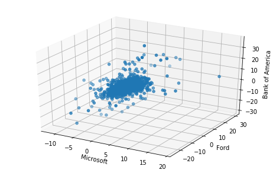
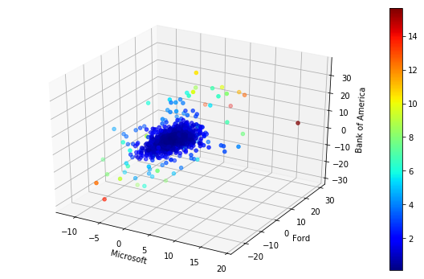

The following tutorial contains Python examples for detecting anomalies (outliers) from data. You should refer to Chapters 9 of the “Introduction to Data Mining” book to understand some of the concepts introduced in this tutorial. The notebook can be downloaded from http://www.cse.msu.edu/~ptan/dmbook/tutorials/tutorial9/tutorial9.ipynb.
Anomaly detection is the task of identifying instances whose characteristics differ significantly from the rest of the data. In this tutorial, we will provide examples of applying different anomaly detection techniques using Python and its library packages.
Read the step-by-step instructions below carefully. To execute the code, click on the corresponding cell and press the SHIFT-ENTER keys simultaneously.
9.1 Using Parametric Models
This approach assumes that the majority of the data instances are governed by some well-known probability distribution, e.g., Binomial or Gaussian distribution. Anomalies can then detected by seeking for observations that do not fit the overall distribution of the data.
In this example, our goal is to detect anomalous changes in the daily closing prices of various stocks. The input data stocks.csv contains the historical closing prices of stocks for 3 large corporations (Microsoft, Ford Motor Company, and Bank of America).
We can compute the percentage of changes in the daily closing price of each stock as follows: \[\begin{equation}
\Delta(t) = 100 \times \frac{x_t - x_{t-1}}{x_{t-1}}
\end{equation}\]
where \(x_t\) denotes the price of a stock on day \(t\) and \(x_{t-1}\) denotes the price on its previous day, \(t-1\).
We can plot the distribution of the percentage daily changes in stock price.
from mpl_toolkits.mplot3d import Axes3Dimport matplotlib.pyplot as plt%matplotlib inlinefig = plt.figure(figsize=(8,5)).gca(projection='3d')fig.scatter(delta.MSFT,delta.F,delta.BAC)fig.set_xlabel('Microsoft')fig.set_ylabel('Ford')fig.set_zlabel('Bank of America')plt.show()

Assuming the data follows a multivariate Gaussian distribution, we can compute the mean and covariance matrix of the 3-dimensional data as follows
MSFT 0.045003
F 0.061374
BAC 0.033351
dtype: float64
MSFT F BAC
MSFT 3.191674 2.136351 2.788870
F 2.136351 8.524944 4.997405
BAC 2.788870 4.997405 13.770761
To determine the anomalous trading days, we can compute the Mahalanobis distance between the percentage of price change on each day against the mean percentage of price change. \[\begin{equation}
\textrm{Mahalanobis}(x) = (x - \bar{x}) \Sigma^{-1}(x - \bar{x})^T
\end{equation}\] where \(x\) is assumed to be a row vector.
See Equation 9.4 in Section 9.3.1 for more information about using Mahalanobis distance for detecting anomalies in multivariate Gaussian distribution.
The top-2 anomalies are shown as a brown point in the figure above. The highest anomaly corresponds to the day in which the prices for all 3 stocks increase significantly whereas the second highest anomaly corresponds to the day in which all 3 stocks suffer a large percentage drop in their closing prices. We can examine the dates associated with the top-2 highest anomaly scores as follows.
Note that the sharp drop in the stock prices on October 7, 2008 coincide with the beginning of the global financial crisis (https://en.wikipedia.org/wiki/Global_financial_crisis_in_October_2008) while the increase in the stock prices on April 9, 2009.
This is a model-free anomaly detection approach as it does not require constructing an explicit model of the normal class to determine the anomaly score of data instances. The example code shown below employs the k-nearest neighbor approach to calculate anomaly score. Specifically, a normal instance is expected to have a small distance to its k-th nearest neighbor whereas an anomaly is likely to have a large distance to its k-th nearest neighbor. In the example below, we apply the distance-based approach with k=4 to identify the anomalous trading days from the stock market data described in the previous section.
from sklearn.neighbors import NearestNeighborsimport numpy as npfrom scipy.spatial import distanceknn =4nbrs = NearestNeighbors(n_neighbors=knn, metric=distance.euclidean).fit(delta.as_matrix())distances, indices = nbrs.kneighbors(delta.as_matrix())anomaly_score = distances[:,knn-1]fig = plt.figure(figsize=(10,6))ax = fig.add_subplot(111, projection='3d')p = ax.scatter(delta.MSFT,delta.F,delta.BAC,c=anomaly_score,cmap='jet')ax.set_xlabel('Microsoft')ax.set_ylabel('Ford')ax.set_zlabel('Bank of America')fig.colorbar(p)plt.show()

The results are slightly different than the one shown in Section 9.1 since we have used Euclidean distance (instead of Mahalanobis distance) to detect the anomalies. We can examine the dates associated with the top-5 highest anomaly scores as follows.
This tutorial illustrates examples applying an anomaly detection approach to a multivariate time series data. We consider two approaches, one based on a parametric statistical approach using multivariate Gaussian while the other is a nonparametric distance-based approach using k-nearest neighbor.